El material no se acaba cuando lo compras
¿Bolsa de plástico o bolsa de tela? La respuesta bien calculada no es la que dirías, y el motivo de que falle tu intuición es lo que hay que aprender hoy.
De qué va este tema
Elegir por lo que aguanta ya lo sabes. Ahora, además, responde de lo que cuestaVoz sintetizada y audio propio. La boca sigue el volumen real de la voz.
En el tema anterior elegiste materiales por lo que aguantan: que no se doble, que no se rompa, que no se oxide. Eso es media respuesta, y en este tema vamos a por la otra media.
Empezamos con una pregunta que parece fácil:
Casi todo el mundo contesta «la de tela, y además es obvio». Antes de seguir leyendo, escribe en la libreta qué has tenido en cuenta para contestar. No la respuesta: qué has mirado para darla.
La Agencia de Protección del Medio Ambiente de Dinamarca hizo esa cuenta en serio en 2018, con la norma internacional de ciclo de vida delante y siete materiales de bolsa. Le salió esto: para empatar con una sola bolsa de plástico fina, una bolsa de algodón hay que usarla 52 veces si solo miras el cambio climático, y hasta 7.100 veces si miras todos los indicadores ambientales del estudio, porque el algodón se lleva muchísima agua y muchísimo campo.
7.100 veces es una bolsa cada día durante diecinueve años.
Lo que acaba de fallar no es tu intuición: es el método. Has contestado mirando el objeto que tienes en la mano. Y el objeto que tienes en la mano es solo un fotograma de una película que empezó en una mina y que todavía no ha terminado.
A un producto le pasan siempre cinco cosas, por este orden, y las cinco gastan energía y dejan residuos:
Las cinco etapas de la vida de un producto
- Extraer. Sacar la materia prima de donde esté: mina, cantera, pozo, bosque, campo.
- Fabricar. Convertir esa materia prima en material, y el material en pieza: fundir, laminar, moldear, mecanizar, montar.
- Transportar. Mover la materia prima, las piezas y el producto acabado. Varias veces, y normalmente muy lejos.
- Usar. Todo lo que gasta mientras funciona: electricidad, agua, consumibles, mantenimiento.
- Tirar. Lo que cuesta recogerlo, transportarlo y tratarlo, y lo que se recupera de él —si se recupera—.
Sumar las cinco con un método comprobable se llama análisis de ciclo de vida (ACV). Está normalizado en las ISO 14040 y 14044, que son las que dicen cómo hay que hacerlo para que dos estudios distintos se puedan comparar.
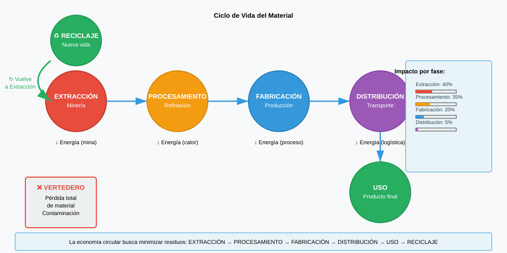
Del ACV hay que quedarse con dos ideas, y son las dos que la gente se salta.
Primera: no se comparan objetos, se comparan servicios
No tiene sentido comparar «una bolsa» con «una bolsa», porque una dura un viaje y la otra dura años. Lo que se compara es llevar la compra a casa 500 veces. Eso se llama unidad funcional: la tarea que hay que hacer, con su cantidad y su tiempo. Todo ACV empieza escribiéndola, y si dos estudios usan unidades funcionales distintas, no se pueden comparar por muy bien hechos que estén los dos.
Bien: «dar 800 lúmenes durante 15.000 horas», que son una lámpara LED o quince bombillas.
Segunda: hay que decir dónde empieza y dónde acaba la cuenta
A eso se le llama límites del sistema, y tiene tres nombres que vas a ver por todas partes:
- De la cuna a la puerta: desde la mina hasta que el producto sale de la fábrica. Es la que dan casi todos los fabricantes, porque es la que controlan.
- De la cuna a la tumba: hasta que se tira. Es la que hace falta para decidir.
- De la cuna a la cuna: hasta que el material vuelve a entrar en otro producto.
Y una unidad de medida: el megajulio
Para sumar cosas tan distintas hace falta una unidad común. Aquí usamos el megajulio (MJ) de energía primaria: la que hubo que sacar de la naturaleza, no la que llega al enchufe.
pero producirlo cuesta alrededor del doble en energía primaria, porque en la central y en la red se pierde por el camino.
En la escena eso es la casilla «contar lo que se pierde en la central».
El coeficiente oficial español (documento reconocido del RITE, 2016) es 1,954 MJ primarios por cada MJ eléctrico; aquí se redondea a 2,0. Es un dato de 2016 y con el mix eléctrico de hoy, con mucha más renovable, sale más bajo. O sea que la escena, en el apartado de uso, va del lado de la exageración. Saberlo forma parte de leer bien el resultado.
Lo que hay que ver en la escena
- Con el aviso de ventilación, que está encendido las 24 horas, el cruce cae sobre el tercer año: si el aparato dura cinco, ya ha gastado funcionando más de lo que costó fabricarlo. Manda el uso.
- Ahora sube la mochila de la electrónica de 60 a 200 MJ. El cruce se va al año nueve y la conclusión se da la vuelta. Eso no es un fallo de la escena: es que ese dato no lo sabemos bien, y cuando un dato que no sabes bien decide el resultado, lo honesto es decirlo.
- Con el riego, que enciende la bomba tres minutos al día, manda la fabricación con un 94 %… pero solo si quitas la casilla del reposo. Con la placa enchufada todo el día, el uso se multiplica por cuarenta y vuelve a ganar él.
- El transporte casi no se ve en la barra, aunque el viaje sea de 19.000 km en barco: un 0,6 %. Cambia a avión, sin tocar nada más: el mismo viaje y el mismo peso pasan a ser una cuarta parte del total.
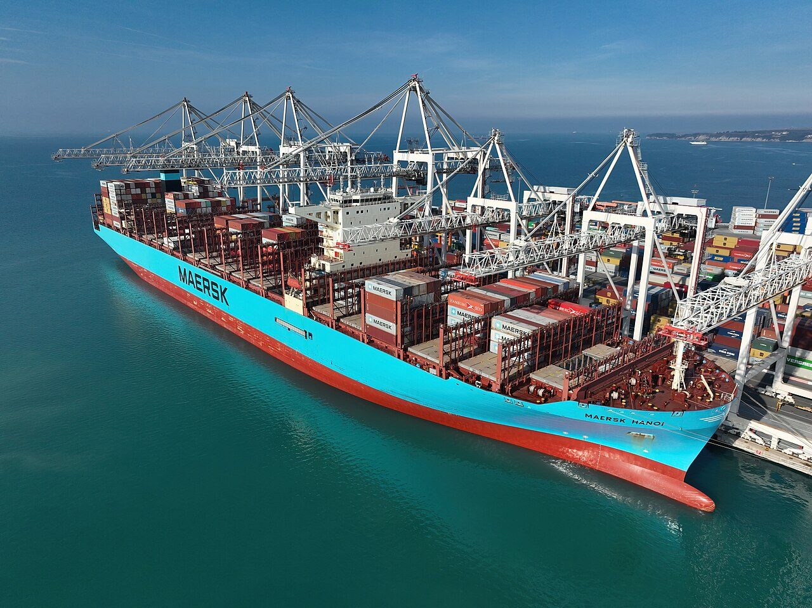
Repasa las etapas y las normas ISO 14040 y 14044 con un ejemplo hecho. El vídeo no se carga hasta que lo pulsas, y se reproduce sin cookies de seguimiento. Si no se ve aquí —porque la red del centro bloquee YouTube o porque ese vídeo no se deje empotrar—, ábrelo directamente aquí. El vídeo es de su autor y no forma parte del material publicado bajo la licencia de esta página.
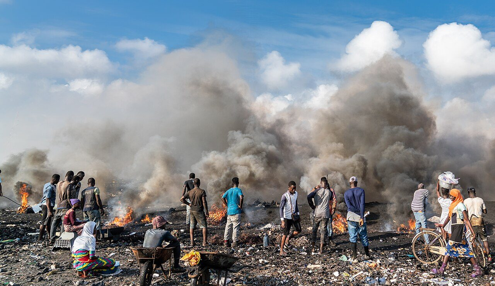
Vais a hacer la cuenta de la sesión para uno de los proyectos del catálogo del curso —el que más os suene—, y a escribirla entera. No vale decir el resultado: hay que enseñar la cuenta.
Primera parte · escribir la pregunta (5 min)
- Escribid la unidad funcional. No «un aviso de ventilación», sino algo como «avisar de que el aula está cargada, en horario de clase, durante cinco cursos».
- Escribid los límites: ¿de la cuna a la puerta, a la tumba o a la cuna? Y decid qué dejáis fuera a propósito (por ejemplo: el viaje de los alumnos al centro).
Segunda parte · la cuenta (15 min)
- En la escena, poned vuestro aparato, los años que penséis que va a durar y el tiempo real que trabaja al día. Copiad la tabla de abajo a la libreta, con las multiplicaciones, no solo con los totales.
- Decid cuál es la etapa que manda y con qué porcentaje.
- Ahora movéis un solo dato y volvéis a mirar. Tres pruebas:
- quitar la casilla del reposo;
- cambiar el barco por el avión;
- mover la mochila de la electrónica de 20 a 200 MJ.
- Cerrad con una propuesta concreta para bajar el total de vuestro aparato, y con el número de MJ que se ahorraría. Una sola, la que más pese.
Cómo se evalúa
- Unidad funcional escrita, con cantidad y tiempo (2 puntos).
- Límites del sistema dichos, y algo dejado fuera a propósito y declarado (1 punto).
- Las cuatro etapas con su multiplicación copiada, no solo el total (3 puntos).
- Las tres pruebas, cada una con su conclusión (2 puntos).
- La propuesta de mejora, con su número y coherente con la etapa que manda (2 puntos).
- ¿Por qué no se puede contestar «qué contamina más, A o B» sin escribir antes la unidad funcional?
Ver respuesta
Porque A y B casi nunca hacen el mismo trabajo. Una bolsa de tela dura años y una de plástico, un viaje; una lámpara LED dura quince bombillas. Hasta que no dices qué tarea, con qué cantidad y durante cuánto tiempo, no estás comparando: estás poniendo dos objetos al lado.
- Un fabricante dice que su aparato tiene «huella cero». ¿Qué dos cosas preguntas antes de creértelo?
Ver respuesta
Los límites del sistema y la unidad funcional. Si la cuenta va de la cuna a la puerta, todo lo que gasta el aparato mientras se usa queda fuera, y eso en muchos aparatos es la mitad larga del total. Y si la unidad funcional está bien elegida, se puede ganar casi cualquier comparación.
- En el riego, la bomba tira 3,5 W tres minutos al día y la placa 0,3 W las 24 horas. ¿Cuál gasta más al año? Haz la cuenta.
Ver respuesta
Bomba: 3,5 W × 0,05 h = 0,175 Wh al día → 64 Wh al año.
Placa: 0,3 W × 24 h = 7,2 Wh al día → 2.628 Wh al año.
La placa gasta cuarenta veces más que el actuador. Es el resultado que menos se espera todo el mundo y el que más sirve para diseñar. - ¿Por qué el transporte casi nunca se ve en la barra, y cuándo sí se ve?
Ver respuesta
Porque un barco portacontenedores mueve una tonelada un kilómetro con 0,16 MJ: es brutalmente eficiente. Se ve cuando el medio cambia: el avión gasta 52 veces más por tonelada y kilómetro (8,3 frente a 0,16). Por eso lo que importa no es cuántos kilómetros ha hecho algo, sino cómo los ha hecho.
Fundir un kilo de aluminio cuesta 1 MJ. Hacerlo cuesta 186
Sobran ciento ochenta y cinco megajulios que no están en el horno. Están en 1886, y en la factura de la luz de una fábrica que no puede apagarse nunca.
En la sesión anterior, cada material entraba en la cuenta con un número pegado: tantos megajulios por kilo. Hoy abrimos ese número.
Calcula, con la física que ya sabes, cuánta energía hace falta para fundir un kilo de aluminio que está a 20 °C. Necesitas dos cosas: subirlo de temperatura y luego fundirlo. Los datos: calor específico 0,897 kJ/(kg·K), temperatura de fusión 660 °C, calor latente de fusión 397 kJ/kg.
Fundir: 1 kg × 397 kJ/kg = 397 kJ
Total: 971 kJ, o sea 0,97 MJ.
Menos de un megajulio. Y en la sesión anterior el aluminio entraba en la cuenta con 186.
186 frente a 0,97. Sobran 185 megajulios que no están en el horno. ¿Dónde están?
La respuesta empieza por una cosa que casi nadie tiene presente: en la naturaleza no hay aluminio. Hay bauxita, que es tierra roja llena de óxido de aluminio. El aluminio está ahí dentro, pero agarrado al oxígeno, y separarlos es justamente lo que cuesta.
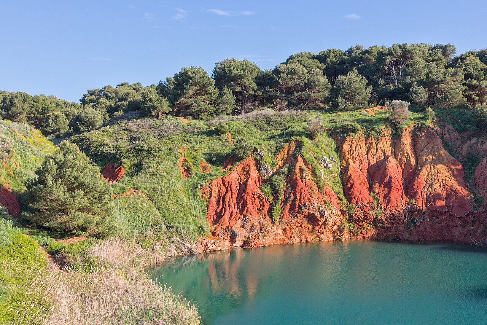
El nombre: energía incorporada
Energía incorporada
La energía incorporada de un material es toda la energía que hubo que gastar para tener un kilo de ese material listo para usar: extraer el mineral, moverlo, refinarlo, reducirlo y darle forma de lingote o de bobina.
Se mide en MJ por kilo y ya está gastada el día que compras el material. No se ve, no viene en una factura aparte y no se puede devolver. De ahí el otro nombre con que se la conoce: la mochila del material.
Por qué el aluminio lleva esa mochila: 1886
Durante casi todo el siglo XIX el aluminio fue un metal de lujo. No porque fuera raro —es el metal más abundante de la corteza terrestre—, sino porque nadie sabía separarlo del oxígeno de forma barata. En 1884, cuando se remató el Monumento a Washington, le pusieron una punta de aluminio de 2,85 kg: fue la pieza de aluminio más grande fundida hasta entonces, y el metal costaba entonces lo mismo o más que la plata.
Dos años después, en 1886, dos chicos de 22 años que no se conocían de nada dieron con la misma solución el mismo año: Charles Martin Hall en Estados Unidos y Paul Héroult en Francia. La idea: disolver la alúmina en criolita fundida a unos 950 °C y pasarle una corriente eléctrica enorme. El oxígeno se va por un lado, quemando los electrodos de carbón, y el aluminio líquido se acumula por el otro. Es el proceso Hall-Héroult, y hoy, ciento cuarenta años después, todo el aluminio del mundo se sigue haciendo así.
14 kWh × 3,6 MJ/kWh = 50 MJ eléctricos por kilo…
…que producir cuesta unos 100 MJ primarios.
Ahí está más de la mitad de los 186. El resto es la mina, el proceso Bayer que convierte la bauxita en alúmina, los ánodos de carbón que se van consumiendo y la colada.
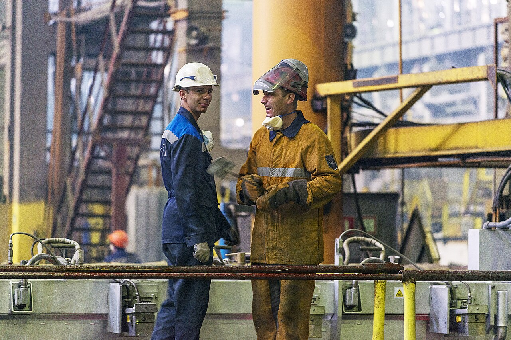
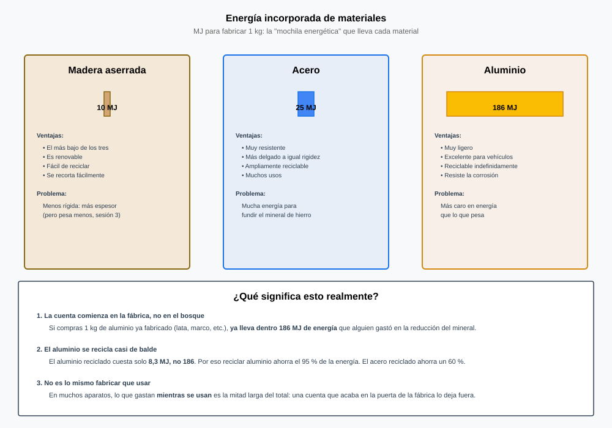
La reacción y el montaje de la cuba, paso a paso. El vídeo no se carga hasta que lo pulsas, y se reproduce sin cookies de seguimiento. Si no se ve aquí —porque la red del centro bloquee YouTube o porque ese vídeo no se deje empotrar—, ábrelo directamente aquí. El vídeo es de su autor y no forma parte del material publicado bajo la licencia de esta página.
Y entonces, ¿por qué reciclar aluminio ahorra tanto?
Porque al aluminio que ya existe no hay que arrancarle el oxígeno: eso ya se hizo en 1990, o en 2005, o el mes pasado, y el trabajo se quedó guardado dentro del metal. Reciclarlo es volver a fundirlo, que es la cuenta que has hecho al principio de la sesión: menos de un megajulio por kilo.
Aluminio reciclado, contando recogida, clasificado, fundido y mermas: 8,3 MJ/kg
Ahorro: (186 − 8,3) / 186 = 95,5 %
Los dos números son del International Aluminium Institute, datos de 2019. Es ese 95,5 % el que está detrás del titular de toda la vida: reciclar aluminio ahorra el 95 % de la energía. No es un eslogan: es una división.
Lo que hay que ver en la escena
- La regla entera son los MJ de sacarlo del mineral. Lo que cuesta fundirlo es esa rayita de la izquierda: con el aluminio, medio por ciento de la regla.
- Cambia a acero: la regla se encoge mucho (25 MJ/kg frente a 186) y la rayita de fundir, en cambio, es casi igual de larga. Por eso el acero se recicla mucho, pero el ahorro relativo es menor: no había tanto que ahorrar.
- Prueba el vidrio: no tiene calor latente de fusión, porque no cristaliza. El vidrio no funde, se reblandece.
- Sube el porcentaje de reciclado y mira la recta: la del aluminio cae en picado y la de la madera es casi plana. No todos los materiales ganan lo mismo con reciclarse.
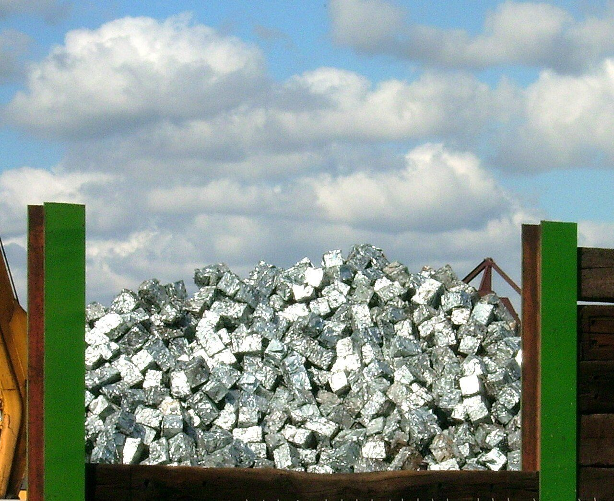
| Material | Virgen (MJ/kg) | Reciclado (MJ/kg) | Ahorro |
|---|---|---|---|
| Aluminio | 186 | 8,3 | 95 % |
| Cobre | 60 | 17 | 72 % |
| Acero bajo en carbono | 25 | 10 | 60 % |
| Vidrio | 15 | 9 | 40 % |
| Plástico tipo PET | 84 | 45 | 46 % |
| PLA de impresora 3D | 50 | — | — |
| Contrachapado | 15 | — | — |
| Madera aserrada | 10 | — | — |
| Hormigón | 1,1 | — | — |
| El par del aluminio es del International Aluminium Institute (datos de 2019, de la mina a la fundición). Los demás son el valor central del rango que da Ashby, Materials and the Environment. Son órdenes de magnitud: según el país, la fábrica y lo que cada estudio cuente, cada cifra se mueve fácilmente un 20 %. Sirven para comparar materiales, no para certificar nada. | |||
Coged una pieza real: la que hayáis hecho en el tema anterior, o la tapa, el soporte o la carcasa de uno de los proyectos del catálogo.
Primera parte · pesar y calcular (10 min)
- Pesad la pieza. Si no tenéis balanza, calculad la masa con las medidas y la densidad: masa = densidad × volumen. Escribid cómo lo habéis hecho.
- Con la tabla de arriba, calculad su energía incorporada. Una multiplicación: kg × MJ/kg.
- Repetid la cuenta suponiendo que la pieza fuera de otros dos materiales, con la misma masa. Ya sabemos que la misma masa no es una comparación justa —eso es la sesión que viene—; por ahora vale.
Segunda parte · ponerlo en algo que se entienda (10 min)
- Pasad vuestro resultado a kWh (dividid entre 3,6) y luego decid a qué equivale: cuántas horas de un portátil de 45 W, o cuántos días de un frigorífico de 0,7 kWh/día.
- Usad la escena para calcular qué se ahorraría si esa pieza fuera de material reciclado al 100 %. Copiad la cuenta.
- Una línea de conclusión: para esa pieza concreta, ¿merece la pena pelear por el material reciclado, o el ahorro es despreciable frente al resto del aparato? Justificadlo con el número de la sesión 1.
Cómo se evalúa
- La masa, medida o calculada, con el método escrito (2 puntos).
- La energía incorporada de los tres materiales, con la cuenta (3 puntos).
- La equivalencia en kWh y en algo cotidiano, bien calculada (2 puntos).
- El ahorro del reciclado, con su cuenta (1 punto).
- La conclusión, apoyada en el peso que tenía esa etapa en la sesión 1 (2 puntos).
- ¿Por qué cuesta 186 MJ hacer un kilo de aluminio si fundirlo cuesta 0,97?
Ver respuesta
Porque en la naturaleza no hay aluminio: hay óxido de aluminio. Los 0,97 MJ son solo calentar y fundir metal que ya es metal. Los otros 185 son, sobre todo, la electrólisis que separa el aluminio del oxígeno —unos 14 kWh por kilo—, más la mina, el proceso Bayer y los ánodos.
- Un compañero dice: «el acero se recicla y ahorra un 60 %, el aluminio un 95 %; luego reciclar aluminio ahorra más». ¿Es correcto?
Ver respuesta
En porcentaje sí, pero lo que de verdad importa son los megajulios. Reciclar un kilo de aluminio ahorra 186 − 8,3 = 178 MJ. Reciclar un kilo de acero ahorra 25 − 10 = 15 MJ. O sea que el aluminio ahorra más por las dos vías, y por eso las latas se recogen aparte. Pero cuidado con el razonamiento: hay materiales con porcentajes altos y ahorros pequeños. El porcentaje solo no decide.
- ¿Por qué las fábricas de aluminio están casi siempre al lado de una central hidroeléctrica o en Islandia?
Ver respuesta
Por dos motivos. Uno: gastan tantísima electricidad que lo que manda en el precio del aluminio es el precio del kWh, así que se ponen donde la electricidad es barata. Dos: las cubas no se pueden apagar; si se cortan unas horas, el baño se solidifica y hay que reconstruir la cuba. Necesitan una fuente que no falle nunca.
- La cuenta de fundir usa el calor específico a temperatura ambiente. ¿Eso hace que el resultado se quede corto o se pase?
Ver respuesta
Se queda corto. El calor específico de un metal sube con la temperatura, así que calentar de 20 a 660 °C cuesta algo más de lo que dice la cuenta. Da igual para la conclusión —aunque costara el doble seguiría siendo 2 frente a 186—, pero hay que saber en qué dirección se equivoca tu cuenta. Una estimación de la que sabes el sentido del error vale mucho más que un número exacto de procedencia desconocida.
El acero es 26 veces más rígido que la madera, y pierde
Aquí no hay respuesta buena: hay compromisos. Una matriz de decisión no elige por ti, pero te obliga a escribir qué te importa, y eso ya lo cambia todo.
Toca elegir de qué hacéis la tapa del proyecto: una placa de 200 × 150 mm que cierra la caja por arriba y que no se puede hundir cuando alguien apoya la mano.
acero 210 GPa, aluminio 69 GPa, contrachapado 8 GPa.
El acero es 26 veces más rígido que la madera. Conclusión: si quieres que no se hunda, acero.
Si eso fuera así, los cascos de bici, las carcasas de los portátiles, las tablas de skate y las alas de los aviones serían de acero, y no lo son. ¿Qué tiene de malo esa comparación?
Tiene de malo que compara a igualdad de espesor, y a nadie le hace falta que la tapa tenga 4 mm: le hace falta que no se hunda. Son cosas distintas.
Y resulta que lo que se hunde una placa al apoyar no depende del módulo a secas: depende de E · t³, del módulo por el espesor al cubo. Ese cubo lo cambia todo, porque doblar el espesor multiplica la rigidez por ocho. Si dejas que cada material elija su espesor, la comparación se da la vuelta:
t = 4 mm × (8 / E)1/3
acero: 4 × (8/210)1/3 = 1,35 mm → 7.850 kg/m³ × 0,03 m² × 1,35 mm = 317 g
contrachapado: 4,00 mm → 600 kg/m³ × 0,03 m² × 4,00 mm = 72 g
La tapa de acero es tres veces más fina… y pesa cuatro veces y media más. A igualdad de rigidez, gana la madera. Esto no es una curiosidad: es la razón de que las alas de los primeros aviones fueran de madera y de que hoy sean de fibra de carbono, que juega a lo mismo.
Pero antes de salir corriendo a hacerlo todo de contrachapado: la tapa del riego va a estar debajo de un depósito de agua.
El problema de verdad: no hay un criterio, hay seis
Una pieza tiene que cumplir varias cosas a la vez, y esas cosas se pelean: lo que sube una, baja otra. Si mejoras el golpe, empeoras el peso; si bajas el precio, sube la energía incorporada. A eso se le llama criterios en conflicto, y no se resuelve buscando más: se resuelve decidiendo qué te importa más y diciéndolo en voz alta.
Los dos tipos de criterio, que no se mezclan
- Eliminatorios. O se cumplen o el candidato se va. «Tiene que aguantar mojado», «tiene que soportar 80 °C», «lo tenemos que poder cortar nosotros». No puntúan: eliminan. Un material que saca un 9 en todo lo demás pero se deshace con el agua, para una pieza mojada vale cero.
- Ponderados. Los que se puntúan y se pesan. Aquí sí hay grados, y aquí es donde entra la matriz de decisión.
Primero se eliminan y después se puntúa. Hacerlo al revés es el error típico, y acaba con un ganador que no sirve.
La matriz de decisión, paso a paso
Cómo se hace una matriz de decisión
- Candidatos en filas, criterios en columnas.
- Dimensionar para el mismo trabajo. Cada candidato con el espesor, la sección o la cantidad que necesite para cumplir. Si no, comparas peras con manzanas.
- Rellenar con datos, no con opiniones, todo lo que se pueda: masa, precio y energía salen de una cuenta. Lo que sea opinión, se marca como tal.
- Normalizar de 0 a 10. No se pueden sumar kilos con euros. Al mejor de cada columna se le da 10, al peor 0 y los demás en proporción.
- Invertir los criterios al revés. En «pesa» y «cuesta», menos es mejor: el 10 va al más ligero y al más barato.
- Poner los pesos, de 0 a 5, según lo que importe cada criterio en este proyecto.
- Nota = suma de (peso × puntuación) dividida entre la suma de pesos.
Lo que hay que ver en la escena
- Los seis espesores están dibujados a escala y salen de la fórmula del cubo. El de acero es una chapita; el de PET, casi 6 mm.
- Sin requisitos eliminatorios, el contrachapado gana casi siempre, y no es un fallo de la escena: para una tapa que solo tiene que no hundirse, la madera es de verdad el mejor material. Por eso el taller de tecnología huele a contrachapado.
- Marca «va a estar mojado». Se van el contrachapado, el DM y el acero, las notas de los que quedan se recalculan y gana otro. Ese es el momento de la sesión.
- Mueve solo los pesos, sin tocar los requisitos, y mira si cambia el ganador. Si no cambia con ningún peso, es que la decisión estaba clara y la matriz solo te ha servido para justificarla. También vale para eso.
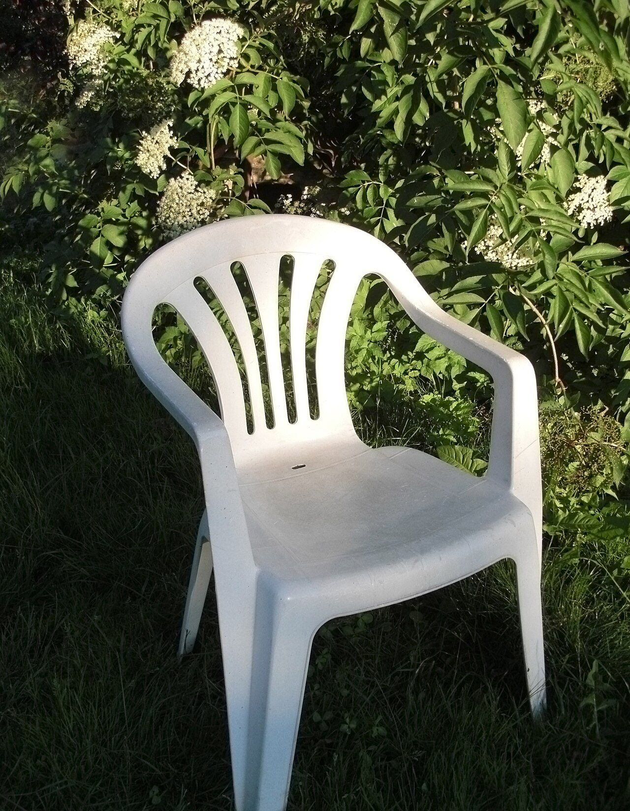
Elegid dos de los tres proyectos del catálogo del curso —por ejemplo el riego de la planta y la lámpara— y una pieza concreta de cada uno. La misma pieza en los dos si podéis: la carcasa, o el soporte.
Primera parte · montar la matriz (12 min)
- Escribid primero los requisitos eliminatorios de esa pieza en ese proyecto. Mínimo dos, y justificados en una línea cada uno. Tachad de la lista a los que no pasen.
- Escribid los criterios ponderados y sus pesos, de 0 a 5. Al lado de cada peso, por qué. Un peso sin motivo escrito no cuenta.
- Rellenad la tabla con los datos de la escena (espesor, masa, precio, energía) y con vuestra puntuación de los criterios de taller.
- Haced la suma ponderada a mano, de un candidato, para enseñar que sabéis de dónde sale. Los demás, de la escena.
Segunda parte · que se note el conflicto (8 min)
- Poned los mismos candidatos con los pesos del otro proyecto. ¿Cambia el ganador? Si cambia, explicad qué criterio lo ha cambiado. Si no cambia, explicad por qué ese material es robusto a los pesos.
- Escribid en tres líneas la defensa de vuestra elección, como si se la contarais al resto de la clase. Tiene que empezar por el requisito eliminatorio, no por la nota.
Cómo se evalúa
- Dos requisitos eliminatorios, justificados, y aplicados antes de puntuar (2 puntos).
- Los pesos, cada uno con su motivo escrito (2 puntos).
- La tabla completa, con el espesor de cada candidato (2 puntos).
- Una suma ponderada hecha a mano y correcta (1 punto).
- La comparación entre los dos juegos de pesos, con la explicación (2 puntos).
- La defensa en tres líneas (1 punto).
- El acero es 26 veces más rígido que el contrachapado. ¿Por qué entonces una tapa de acero que aguante lo mismo pesa más?
Ver respuesta
Porque la rigidez de una placa va con E · t³, no con E. Al acero le basta con la raíz cúbica de 1/26 del espesor, o sea un tercio; pero su densidad es trece veces la de la madera. Un tercio de espesor por trece de densidad sale a más de cuatro veces la masa. La rigidez se gana con el cubo del espesor y se paga con la densidad, y por eso en piezas a flexión gana casi siempre lo gordo y ligero.
- ¿Por qué hay que normalizar antes de sumar?
Ver respuesta
Porque si no, la columna con los números más grandes se come a las demás. Sumando en crudo, 186 MJ aplasta a 0,63 € y a 0,16 kg, aunque los euros te importen más. Normalizar de 0 a 10 quita las unidades y deja que el reparto lo decidan los pesos, que es donde tú estás diciendo lo que te importa.
- ¿Por qué un requisito eliminatorio no se pone como criterio con peso 5?
Ver respuesta
Porque con peso 5 todavía se puede compensar: un material que aguante fatal el agua puede ganar si arrasa en los otros cinco. Y una tapa que se deshace con el agua no sirve, punto, saque lo que saque en lo demás. Los requisitos no se negocian; los criterios sí. Confundirlos es la manera más rápida de que una matriz muy bien hecha te dé una pieza que no vale.
- Sale ganador un material con 7,20 sobre 10 y el segundo saca 7,05. ¿Qué escribes en la memoria?
Ver respuesta
Que hay empate. Quince centésimas no las sostiene ningún dato de los que has metido: el precio del contrachapado varía más que eso de una semana a otra. Se escribe que los dos cumplen, cuál se elige y por qué motivo de fuera de la matriz (lo que hay en el taller, lo que sabéis cortar, lo que se consigue gratis). Eso es honesto y es defendible; poner «gana el contrachapado» a secas, no.
Un aparato que no se puede abrir no se ha estropeado: se diseñó así
La batería cuesta dos euros y el aparato se tira. Esa cuenta la decide una elección hecha años antes en un taller de diseño, y desde hace poco también la decide la ley.
Se te han roto unos auriculares inalámbricos. Uno de los dos ya no carga. Sabes que lo que falla es la batería, que es un cilindro del tamaño de un guisante y cuesta menos de dos euros.
¿A quién se le ha estropeado el diseño aquí? ¿Es mala suerte, es que no cabían los tornillos, o es que alguien, en una reunión, tomó una decisión? Y si fue una decisión, ¿qué ganaba con ella?
La respuesta corta es que no se ha estropeado nada. Ese aparato está funcionando exactamente como se diseñó. Pegar dos carcasas sale más barato que atornillarlas, aguanta mejor el agua, deja el aparato más fino y se monta en la cadena en dos segundos. Todo eso es verdad y todo eso es legítimo. Lo que pasa es que, de propina, el aparato se vuelve imposible de arreglar, y esa propina no la paga quien tomó la decisión.
Y esto no es nuevo. Tiene fecha, y la fecha es 1924.
Que exista el cártel Phoebus no quiere decir que todo lo que se rompe esté saboteado a propósito: la mayoría de las veces no lo está. Pero sí quiere decir que la duración de un producto es un parámetro de diseño, igual que el peso o el precio, y que alguien le pone un valor.
La cuenta que decide de verdad
Cuando llevas algo a arreglar, en el taller hacen una cuenta de treinta segundos:
…y si eso pasa del 60 % del precio de uno nuevo, nadie repara.
Ese 60 % no es una ley, es la regla que se usa en el sector. Y fíjate en quién manda dentro de la cuenta: el tiempo. La pieza cuesta dos euros; el tiempo, a 45 €/h, cuesta 0,75 € por minuto. Cada minuto que el diseñador añade al desmontaje son setenta y cinco céntimos que empujan al aparato hacia la basura.
Y el tiempo de desmontaje se decide en el taller de diseño, eligiendo uniones.
Uniones: las que se deshacen y las que no
Uniones desmontables y uniones fijas
Desmontables: se pueden deshacer sin romper nada y volver a montar igual.
- Tornillo y tuerca, tornillo rosca chapa, prisionero.
- Pasador, chaveta, anillo elástico.
- Clips a presión: desmontables… hasta que se parte el clip.
- Conectores y zócalos: la versión eléctrica de lo mismo.
Fijas: para deshacerlas hay que destruir la unión, y a veces la pieza.
- Remache: hay que taladrarlo.
- Soldadura: hay que cortarla o desoldarla.
- Adhesivo estructural: calor, disolvente y palanca.
Ninguna es mejor que otra en abstracto. Lo que hay es una pregunta que hay que hacerse pieza por pieza: ¿esto va a haber que abrirlo alguna vez? Si la respuesta es sí, unión desmontable. Si es no, la fija suele ser más barata, más rígida y más estanca.
Normalizar es facilitar la reparación
Un aparato con cuatro tornillos M3 iguales se abre con un destornillador. El mismo aparato con cuatro tornillos distintos necesita cuatro puntas, y el que lo arregla tiene que acertar cuál va dónde al volver a montarlo. Usar piezas normalizadas —M3, M4, DIN, ISO— no es burocracia: es que el recambio se encuentra en cualquier ferretería del mundo y la herramienta la tiene todo el mundo.
Lo contrario también se diseña a propósito:
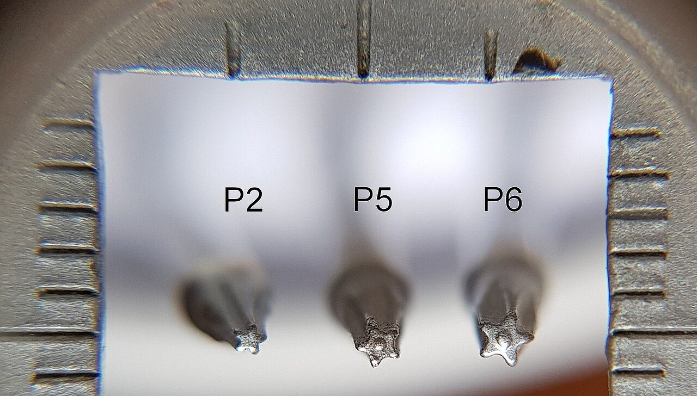
Lo que hay que ver en la escena
- Pon «Tu proyecto» y luego «Un móvil de hoy». Misma avería, mismo taller: uno se resuelve en diez minutos y el otro se va a tres cuartos de hora, casi todo en despegar carcasas.
- Con el móvil, la cuenta dice «se arregla»: 152 € frente a 300. Ahora baja el precio de uno nuevo a 150 €, sin tocar nada más. El mismo teléfono, con la misma avería y el mismo taller, pasa a no repararse. Eso es exactamente lo que le ocurre a la gama baja: cuanto más barato es el aparato, antes le sale a cuenta a todo el mundo tirarlo.
- En el altavoz barato, quita la casilla de «vende la pieza suelta». La cuenta deja de importar: sin repuesto no hay reparación posible a ningún precio.
- Baja la tarifa del taller a 10 €/h y mira cuántas cosas pasan a ser reparables. Eso explica por qué en muchísimos países se repara todo y aquí casi nada: el aparato es el mismo, lo que cambia es el precio de la hora.
- Cambia una sola unión, la primera, de pegado a tornillo, y mira cuánto se mueve el índice. Una decisión, un tornillo, veinte años de diferencia.
Y ahora es la ley
Qué obliga hoy en Europa
- Directiva (UE) 2024/1799, de 13 de junio de 2024, «derecho a reparar»: obliga al fabricante a reparar determinados productos —lavadoras, frigoríficos, pantallas, aspiradoras, móviles, servidores…— también después de que acabe la garantía, a un precio razonable. El plazo que tenían los estados para meterla en su legislación venció el 31 de julio de 2026.
- Reglamento (UE) 2023/1542, de baterías: a partir del 18 de febrero de 2027, las baterías de los aparatos portátiles tienen que ser extraíbles y sustituibles por el usuario, con herramientas normales. Prohibe expresamente los tornillos propietarios y los adhesivos que exijan calor o disolventes, y obliga a tener repuestos siete años.
O sea: lo que hasta hace nada era una opinión de diseño («esto debería poder abrirse») ahora es un requisito. Y un requisito, como viste en la sesión anterior, elimina: no se compensa con nada.
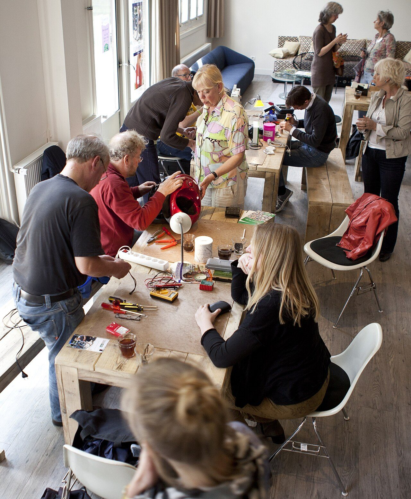
Primera parte · el forense (8 min)
- Abrid el aparato que os toque y haced el parte de desmontaje: cada barrera que encontráis, qué tipo de unión es, qué herramienta hace falta y cuántos segundos habéis tardado (cronometrad de verdad, con el móvil).
- Contad los tornillos distintos. Si hay más de dos medidas, anotadlo: es un punto que se pierde solo.
- Con vuestros tiempos reales, poned la escena en esa configuración y sacad el coste de repararlo y el índice.
Segunda parte · el rediseño (7 min)
- Proponed dos cambios en las uniones que suban el índice, y decid qué pierde el aparato con cada cambio (más grueso, más caro, menos estanco…). Un rediseño que no pierde nada es que está mal pensado.
- Volved a calcular el índice y el coste con vuestros dos cambios.
- Y ahora lo importante: mirad vuestro propio proyecto y decid qué pieza va a haber que cambiar antes —pista: la que tiene batería, la que se moja o la que roza— y cómo vais a hacer que se pueda llegar a ella.
Cómo se evalúa
- El parte de desmontaje, con unión, herramienta y tiempo cronometrado de cada barrera (3 puntos).
- Coste e índice sacados con vuestros tiempos, no con los de ejemplo (2 puntos).
- Dos cambios propuestos, cada uno con lo que se pierde (3 puntos).
- La pieza de vuestro proyecto identificada y cómo se llega a ella (2 puntos).
Lo que tiene que haber quedado de las cuatro sesiones
1. Un estudio dice que una bolsa de algodón hay que usarla 7.100 veces para empatar con una de plástico. Lo primero que hay que preguntar es…
2. En el riego automático, la bomba tira 3,5 W tres minutos al día y la placa 0,3 W las 24 horas. Al cabo de un año…
3. Mover un kilo 19.000 km en barco cuesta unos 3 MJ. ¿Y en avión?
4. Fundir un kilo de aluminio cuesta 0,97 MJ y producirlo cuesta 186. La diferencia está sobre todo en…
5. Reciclar aluminio ahorra el 95 % y reciclar acero, el 60 %. Un kilo de cada uno…
6. Para que se hunda lo mismo que 4 mm de contrachapado, la tapa de acero necesita 1,35 mm. Comparadas así…
7. En una matriz de decisión, ¿cuál es la diferencia entre un requisito eliminatorio y un criterio con peso 5?
8. En el taller, la cuenta que decide si algo se repara es…
9. El cártel Phoebus, en 1924, fijó la duración de las bombillas en 1.000 horas. Lo importante del caso es que…
10. Desde el 18 de febrero de 2027, el Reglamento (UE) 2023/1542 obliga a que…
Se corrige en tu propio navegador: no se envía ni se guarda nada. Las explicaciones aparecen al corregir, tanto en las que aciertes como en las que falles.
- ¿Por qué pegar dos carcasas es, para el fabricante, una buena decisión?
Ver respuesta
Porque es más barato (no hay tornillos ni insertos ni roscas), más rápido de montar, más rígido, más estanco y deja el aparato más fino. Todo eso es cierto. El problema no es que sea una mala decisión técnica: es que el coste que genera lo paga otro, dentro de tres años, y por eso no entra en la cuenta de quien decide. Justo para eso está la ley.
- Tienes que unir dos piezas de tu proyecto. ¿Qué te preguntas antes de elegir la unión?
Ver respuesta
¿Va a haber que abrir esto alguna vez? Si dentro hay una batería, un sensor que se ensucia, un fusible o algo que roza, la respuesta es sí y la unión tiene que ser desmontable. Si es una unión estructural que no se va a tocar nunca, una unión fija es más barata y más rígida, y elegirla no tiene nada de malo.
- ¿Qué gana un fabricante poniendo tornillos pentalobulares en vez de estrella normal?
Ver respuesta
Técnicamente, nada: no aprietan más ni aguantan más par. Lo que gana es que el aparato solo lo pueda abrir quien tenga esa punta, o sea su servicio técnico. Es una unión desmontable convertida en barrera a propósito, y el reglamento europeo de baterías la prohibe expresamente en los aparatos que lleven batería incorporada.
- Une la sesión 1 con esta: ¿por qué alargar la vida de un aparato baja su impacto, aunque no cambies ni un material?
Ver respuesta
Porque la energía de fabricarlo está gastada una sola vez y se reparte entre todos los años que dure. Un aparato de 70 MJ de fabricación que dura tres años carga 23 MJ por año; el mismo aparato durando nueve carga 8. Y si en vez de durar nueve lo tiras y compras otro, no es que lo pagues otra vez: es que lo pagas dos veces. Cambiar una batería de dos euros evita 70 MJ. Ese es el argumento, y es aritmética.
Echas la lata al contenedor. Vuelven 581 gramos de cada kilo
«Reciclable al 100 % e infinitas veces» es verdad, y aun así el aluminio reciclado no llega a la mitad del que se fabrica. La explicación es una cadena de cuatro rendimientos que se multiplican.
En la sesión 2 sacaste un número que no se olvida: reciclar aluminio ahorra el 95,5 % de la energía. Era una división, la hiciste tú, y sigue siendo verdad.
Si eso es verdad, aquí hay algo que no cuadra: en Estados Unidos, en 2022, el aluminio reciclado fue el 34 % de todo el aluminio nuevo que se puso en el mercado. Un tercio. Si el material aguanta infinitas vueltas y reciclarlo ahorra el 95 % de la energía, ¿por qué no es el 100 %? Escribe tu hipótesis en una línea antes de seguir.
La respuesta empieza por separar dos palabras que se usan como si fueran la misma:
Reciclado es un resultado del sistema.
Y el sistema es una fila de camiones, de máquinas y de personas, y cada una de ellas se deja algo por el camino.
El dibujo que casi todo el mundo tiene en la cabeza es este: contenedor → fábrica → lata nueva. Tres flechas y ninguna pérdida. El de verdad tiene cuatro etapas, y lo grave no es que cada una pierda un poco: es que los rendimientos se multiplican.
La planta de clasificación acierta 0,95
Sobrevive a que le quiten lo que no es aluminio 0,92
Sale del horno convertido en metal 0,95
0,70 × 0,95 × 0,92 × 0,95 = 0,581
Cuatro etapas que aprueban con nota —ninguna baja del 70 %— y de cada kilo vuelven 581 gramos. Ese es todo el misterio del tercio.
Qué se pierde en cada etapa, y por qué
La cadena del reciclado, etapa por etapa
- Captura. Que el objeto acabe en el contenedor que le toca. Lo que falla aquí no falla por la máquina: falla porque alguien tiró la lata a la papelera de al lado, o al suelo.
- Clasificación. En la planta, una cinta con separadores: imán para el acero, corrientes de Foucault para el aluminio, óptico para los plásticos. Ninguno acierta el 100 %. Lo que se va al rechazo, se incinera o se entierra.
- Preparación. Quitarle lo que no es el material: la lata lleva laca por fuera y por dentro y hay que quemarla antes de fundir; la botella lleva tapón, anilla y etiqueta; el cartón lleva grapas, tintas y agua.
- Horno o proceso. El aluminio líquido se oxida por la superficie y forma escoria; el vidrio se va en finos; la fibra del papel se rompe y se cuela por la tela.
El rendimiento de la cadena es el producto de los cuatro. No la media: el producto. Por eso una cadena de cuatro etapas buenas puede dar un resultado mediocre, y por eso arreglar la peor etapa es lo que más sube el total.
Ciclo cerrado y ciclo abierto
Y hay una segunda pérdida que no se mide en kilos, sino en calidad. Una lata de refresco no es de un aluminio: es de dos. El cuerpo se embute y necesita una aleación; la tapa tiene que abrirse por una línea marcada y necesita otra. Si las latas se recogen aparte, la mezcla de cuerpos y tapas vuelve a dar chapa de lata. Si se recogen revueltas con perfiles de ventana, con radiadores y con pistones, sube el silicio y sube el hierro, y con eso ya no se hace chapa: se hacen piezas de fundición.
Los dos tipos de ciclo
- Ciclo cerrado: el material vuelve al mismo producto. Botella de vidrio → botella de vidrio. Lata → lata. Exige recogerlo separado.
- Ciclo abierto: el material sirve, pero para otra cosa de menos exigencia, y de ahí ya no vuelve a subir. Botella de PET → forro polar → basura. Vidrio de colores mezclados → lana de vidrio o árido de carretera. A esto se le llama también reciclado a la baja.
Ninguno de los dos es «hacer trampa»: el ciclo abierto también ahorra energía y también evita un vertedero. Lo que hay que saber es que el ciclo abierto se puede hacer una vez, y el cerrado, muchas.
El techo: no puede entrar más del que vuelve
Ahora se puede contestar del todo a la pregunta del principio. Si de cada kilo que se pone en el mercado vuelven 0,58, entonces, por mucho que se quiera, no se puede fabricar con más de un 58 % de reciclado. Es aritmética: no se puede meter en la fábrica un material que no existe.
Y hay un segundo techo, más sutil y más duro:
Si el consumo de ese material crece un 3 % al año, hace quince años el mercado era
1 ÷ 1,0315 = 0,64 veces el de hoy.
O sea que, aunque volviera absolutamente todo, el contenido reciclado no pasaría del 64 %.
Y juntando los dos techos: 0,58 × 0,64 = 37 %.
Ese 37 % se parece muchísimo al 34 % real. No es que la cuenta sea exacta —no lo es—: es que explica el orden de magnitud sin necesidad de acusar a nadie. Lo que impide llegar al 100 % no es la desidia: es que el material que se recicla hoy se fabricó cuando se fabricaba menos.
Lo que hay que ver en la escena
- Con las latas de aluminio tal y como abre, vuelven 581 g de cada kilo. Sube la primera barra de 70 a 90 y mira: el total sube a 747 g. La etapa que más manda es la primera, y esa la haces tú, no la máquina.
- Prueba el acero: 0,728, el mejor de los cinco. Y el PET: 0,436, el peor. No es que el PET sea peor plástico: es que pierde en las cuatro etapas, y sobre todo en la primera, donde se queda en 0,60.
- Mira la fila «para tener 1 kg de material reciclado hay que recoger». Con el PET salen 2,29 kg. Eso explica por qué el reciclado cuesta dinero aunque el material sea gratis.
- Marca «va mezclado» y mira la curva de abajo: se cae a plomo tras la primera vuelta. Ese es el dibujo del ciclo abierto. Quítala y la curva se convierte en una escalera larga que tarda en morirse.
- Y fíjate en la última línea de la tabla: en el aluminio, de cada kilo puesto en el mercado se salvan de verdad unos 103 MJ, no los 178 del ahorro por kilo reciclado. Los dos números son correctos y contestan a preguntas distintas.
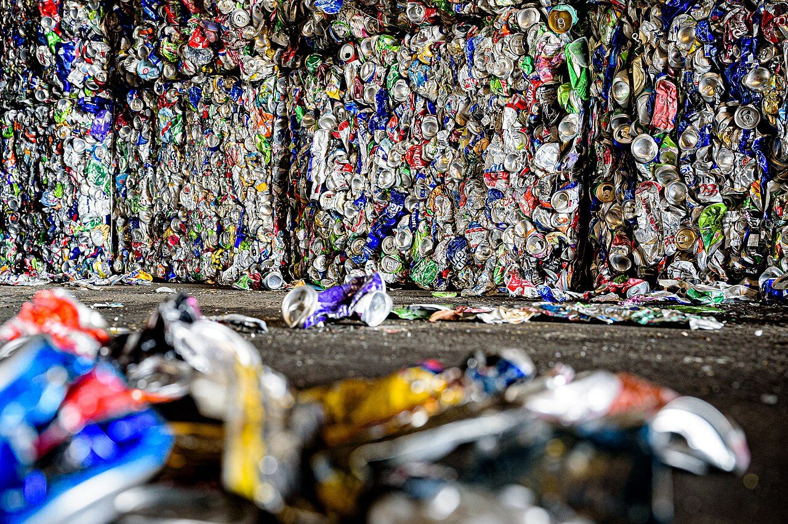
Y para ver el ciclo cerrado y el abierto con los ojos, lo mejor es el vidrio. Estos dos montones salen de la misma planta, lavados y reclasificados los dos, y los dos van a un horno. Pero no van al mismo horno:
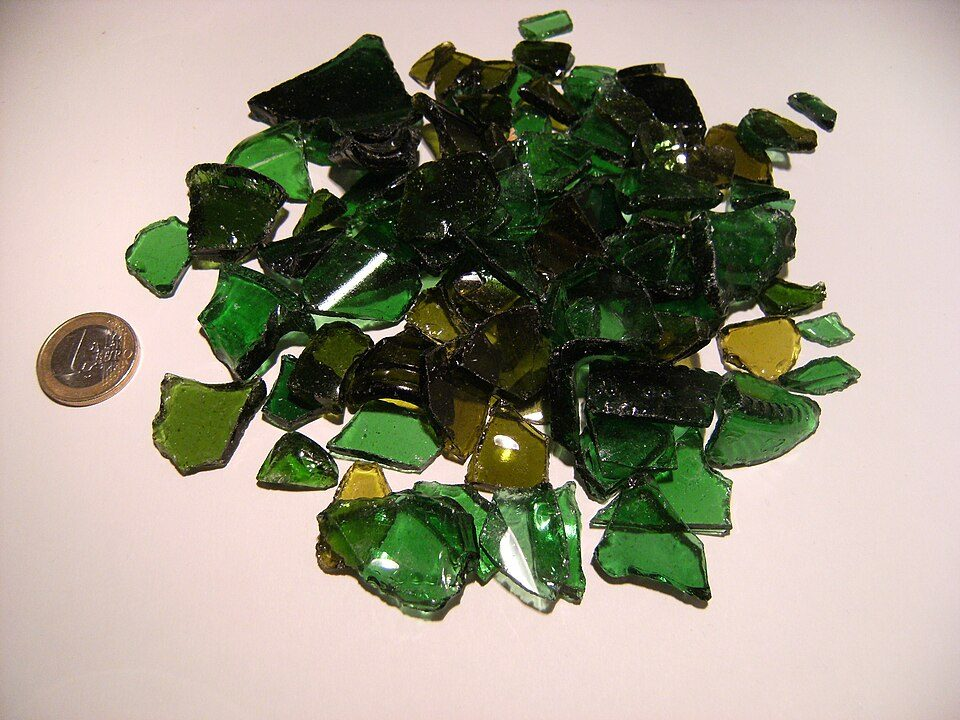
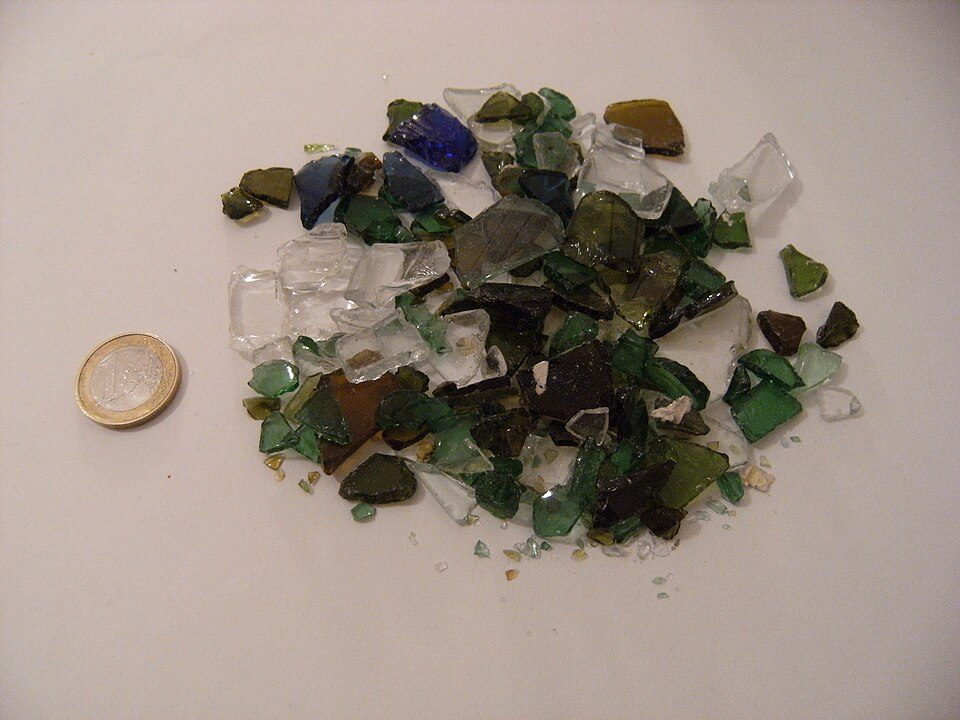
Las cintas, el imán, las corrientes de Foucault y los separadores ópticos de la segunda etapa, funcionando. Ojo con quién lo firma: Ecoembes es el sistema que gestiona esos envases, o sea que tiene interés en que la planta salga bien en el vídeo. Para ver la máquina vale; para las cifras, usa la escena y di de dónde sale cada una. Eso es exactamente lo que aprendiste a preguntar en la sesión 1. El vídeo no se carga hasta que lo pulsas, y se reproduce sin cookies de seguimiento. Si no se ve aquí —porque la red del centro bloquee YouTube o porque ese vídeo no se deje empotrar—, ábrelo directamente aquí. El vídeo es de su autor y no forma parte del material publicado bajo la licencia de esta página.
Coged una pieza de vuestro proyecto que no sea la electrónica: el depósito de PET del riego, la carcasa de contrachapado del aviso, el brazo de chapa de la lámpara. Vais a seguirla hasta el final.
Primera parte · la cadena (10 min)
- Decid a qué fracción va cuando se tire, y qué contenedor es ese en vuestro centro. Si no lo sabéis, id a mirarlo: está en el pasillo.
- Con la escena, copiad la cadena entera a la libreta con las cuatro multiplicaciones, no solo el resultado. Al lado de cada etapa, una línea de qué se pierde ahí.
- Escribid los kilos que hay que recoger para tener un kilo de material reciclado, y el techo del contenido reciclado de esa fracción.
Segunda parte · cerrado o abierto (10 min)
- Marcad y desmarcad «va mezclado». Escribid, con los números de la escena, cuánto queda del kilo después de tres vueltas en cada caso. Y decid a dónde va el material en cada uno.
- Ahora la parte que importa: dos decisiones de diseño vuestras que mantengan esa pieza en ciclo cerrado. Pistas de dónde mirar: piezas de un solo material, tornillos del mismo metal que la chapa, pegatinas que se despeguen, nada de pintar lo que no hace falta, nada de pegar dos materiales que luego no se separan.
- Y una línea honesta: de esas dos decisiones, ¿cuál os cuesta algo, y qué? (Un rediseño que no cuesta nada suele ser un rediseño que no habéis pensado.)
Cómo se evalúa
- La fracción y el contenedor, comprobados (1 punto).
- La cadena con sus cuatro multiplicaciones y qué se pierde en cada etapa (3 puntos).
- Los kilos a recoger y el techo del reciclado, bien calculados (2 puntos).
- Las tres vueltas en los dos casos, con su destino (2 puntos).
- Dos decisiones de diseño, y qué cuesta una de ellas (2 puntos).
- «El aluminio es reciclable al 100 %.» ¿Es verdad? ¿Y qué es lo que no dice?
Ver respuesta
Es verdad, y no tiene truco: el aluminio no se degrada al fundirlo. Lo que no dice es cuánto se recicla de verdad. Reciclable habla del material; reciclado habla del sistema, que es una cadena de cuatro etapas cuyos rendimientos se multiplican. Una frase es una propiedad de la tabla periódica; la otra es un resultado que hay que medir.
- Tu cadena tiene cuatro etapas al 70, 95, 92 y 95 %. Un compañero dice que el rendimiento es la media, un 88 %. ¿Qué le contestas?
Ver respuesta
Que no se suman ni se promedian: se multiplican. 0,70 × 0,95 × 0,92 × 0,95 = 0,581, o sea un 58 %, no un 88. Y de ahí sale una consecuencia práctica: como es un producto, la etapa más floja es la que más sube el total si la arreglas. Aquí esa etapa es la primera, y esa no la arregla una máquina.
- ¿Por qué una botella de PET que acaba en forro polar es un ciclo abierto, y una botella de vidrio verde que vuelve a ser botella verde es cerrado?
Ver respuesta
Porque del forro polar ya no vuelve a salir una botella: la fibra textil no se recoge, no se separa y no tiene una vuelta más. El ciclo abierto se hace una vez y termina. El vidrio verde separado por color vuelve a botella verde, y de ahí a otra, y a otra. Por eso la escena, con la casilla de mezclado marcada, dibuja una curva que se muere en la primera vuelta.
- Si el consumo de un material crece y los productos duran años, ¿por qué el contenido reciclado no puede llegar al 100 % aunque se recogiera todo?
Ver respuesta
Porque la chatarra de hoy son los productos de hace años, y hace años se fabricaba menos. Con un crecimiento del 3 % anual y productos que duran 15 años, 1 ÷ 1,0315 = 0,64: aunque volviera todo, solo habría chatarra para el 64 % de lo que hoy se fabrica. No hace falta que nadie lo haga mal para que el 100 % sea imposible: basta con que el mercado crezca.
La misma tapa, los mismos 186 MJ, y de 4 a 18 kilos de CO₂
No hay un factor que convierta megajulios en CO₂, y hay CO₂ que no viene de quemar nada. Dos cosas que hacen falta antes de poder decir un número en voz alta.
Dos grupos de esta clase hacen la misma tapa: chapa de aluminio, 1,95 mm, 158 gramos, la de la sesión 3. Misma pieza, mismo plano, misma masa. Los dos consultan la tabla de la sesión 2 y los dos escriben lo mismo: 0,158 kg × 186 MJ/kg = 29,4 MJ. Hasta aquí, ningún problema.
Un grupo compró su chapa a una fábrica de Islandia, que trabaja con electricidad hidráulica y geotérmica. El otro, a una fábrica que tira de una central de carbón. Misma masa, mismos 186 MJ/kg, mismo proceso Hall-Héroult de 1886. ¿Emiten lo mismo?
No. Y la diferencia no es de un 10 %: la cuenta la puedes hacer tú con lo que ya sabes de la sesión 2, donde sacaste que la cuba gasta 14,1 kWh de electricidad por kilo.
Carbón: 14,1 kWh × 1,000 kg de CO₂/kWh = 14,10 + 4,00 = 18,10 kg de CO₂ por kilo
La misma tapa de 158 g: 0,68 kg de CO₂ o 2,86 kg. Cuatro veces.
Los 186 megajulios no se han movido. Lo que ha cambiado es quién los produjo y con qué. De ahí la frase que hay que llevarse de hoy: un megajulio no tiene un CO₂.
La herramienta: factor de emisión
Huella = cantidad × factor de emisión
El factor de emisión son los kilos de gases de efecto invernadero que suelta una unidad de algo: un kWh de la red, un litro de gasolina, un kilo de cemento. Se multiplica por la cantidad y sale la huella.
Se mide en kilos de CO₂ equivalente (kg de CO₂e). ¿Equivalente? Porque no todo lo que se suelta es CO₂, y no todo calienta igual. Cada gas se convierte a «cuánto CO₂ haría el mismo efecto en cien años», y así se pueden sumar.
Lo importante: cada factor va con su etiqueta. El de la electricidad depende del país y del año. Un factor sin decir de dónde y de cuándo es un factor inservible.
Hay CO₂ que no viene de quemar nada
Aquí es donde la idea de «multiplicar los megajulios por un número» se rompe del todo. Mira el hormigón: es el material con menos energía incorporada de toda la tabla de la sesión 2, 1,1 MJ/kg. Y el cemento que lleva dentro es responsable de una parte enorme del CO₂ del planeta. ¿Con 1,1 MJ/kg?
La calcinación de la caliza
Para hacer cemento hay que convertir la caliza en cal, y esa es una reacción química que suelta CO₂ por sí misma:
CaCO₃ → CaO + CO₂
Con las masas: 100 g de carbonato dan 56 g de cal y 44 g de CO₂. Como el clínker lleva alrededor de un 65 % de cal:
0,65 ÷ 56 × 44 = 0,51 kg de CO₂ por cada kilo de clínker
…y eso es antes de encender el horno. En el cemento, alrededor de la mitad del CO₂ sale de la piedra y solo unos dos quintos de quemar combustible.
Consecuencia, y es gorda: el cemento no se arregla con electricidad limpia. Puedes darle al horno energía solar perfecta y la mitad de sus emisiones seguirán ahí, porque salen de la reacción. Por eso la investigación en cemento va por otro lado: cambiar la receta, o capturar el CO₂ a la salida.
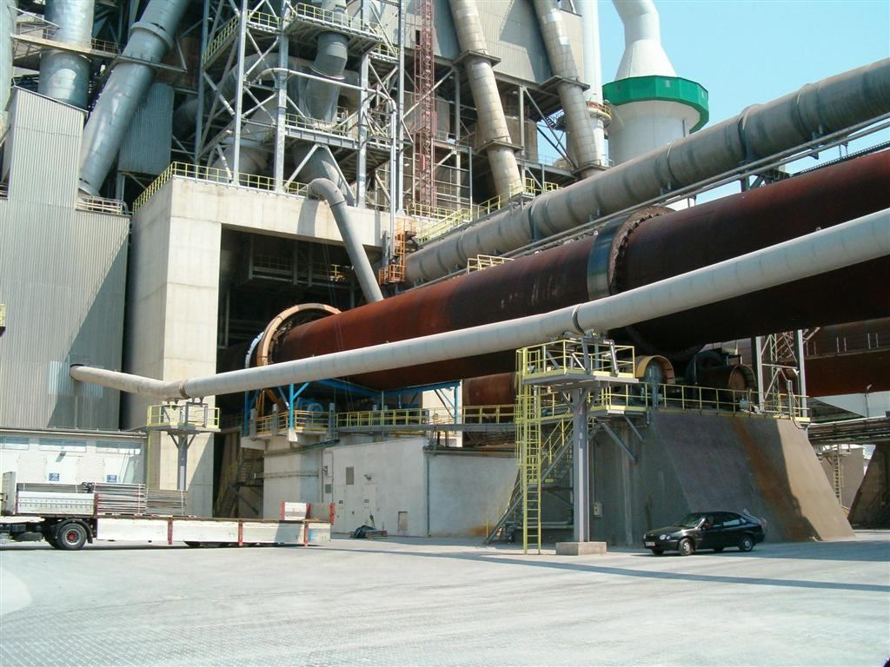
El carbono que un material lleva dentro
Y al revés también pasa. Un kilo de madera seca es carbono en casi la mitad de su masa, y ese carbono estuvo en el aire hasta que el árbol lo bajó:
Fabricar ese kilo de contrachapado cuesta unos 0,55 kg de CO₂.
O sea que, contado así, la pieza sale en negativo. Pero eso solo vale con dos condiciones, y las dos hay que escribirlas al lado del número:
- que el bosque se reponga —si el árbol no se sustituye, no hay nada que volver a capturar—;
- y que la madera no se queme ni se pudra, porque entonces devuelve exactamente el mismo carbono que se llevó.
Por eso las normas de declaraciones ambientales ponen el carbono de origen biológico en un apartado aparte en vez de restarlo del total: para que se vea que es un préstamo, no un regalo. En la escena, si marcas las dos casillas a la vez, la madera vuelve sola a número positivo. Comprueba que pasa: es la mejor manera de entenderlo.
Energía y CO₂ no son la misma magnitud
Ya con esto se entiende el resultado que más descoloca de la sesión. Compara el PET con el acero:
En CO₂, con la red española: PET 2,08 kg/kg frente a acero 1,97. Empate.
¿Cómo puede ser? Porque la mayor parte de esos 84 MJ del PET es petróleo que se convierte en plástico, no que se quema. Esa energía sigue ahí, metida dentro de la botella; se llama energía de la materia prima. Solo se convierte en CO₂ si al final se incinera la botella, y ahí salen de golpe otros 2,29 kg por kilo.
Ese 2,29 también se calcula, y sale de la fórmula del PET, C₁₀H₈O₄: masa molar 192, de los que 120 son carbono. 120/192 × 44/12 = 2,29. Acuérdate ahora de la nota de la sesión 1 sobre el estudio danés de las bolsas: en Dinamarca la bolsa acaba incinerada. Ya sabes qué significa eso en la cuenta.
Lo que hay que ver en la escena
- Pon Islandia y luego central de carbón. La columna de la izquierda, los megajulios, no se mueve ni un píxel. La de la derecha se multiplica por cuatro en el aluminio. Ese es el titular de la sesión.
- Con ese mismo cambio, mira el acero: pasa de 1,91 a 2,40. Casi nada. Su CO₂ no está en el enchufe, está en el coque del alto horno. Por eso el acero no se limpia poniendo renovables, y el aluminio sí.
- Marca «contar el carbono que la madera lleva dentro»: el contrachapado se va a la izquierda del cero y pasa a ser el mejor de los seis. Ahora marca también la de quemarlo al final: vuelve solo a positivo. Las dos casillas hablan del mismo carbono.
- Con solo la casilla de quemar, el PET pasa de 2,08 a 4,37 y le saca ya el doble al acero. La misma botella, dos finales, dos números. Los límites del sistema otra vez, como en la sesión 1.
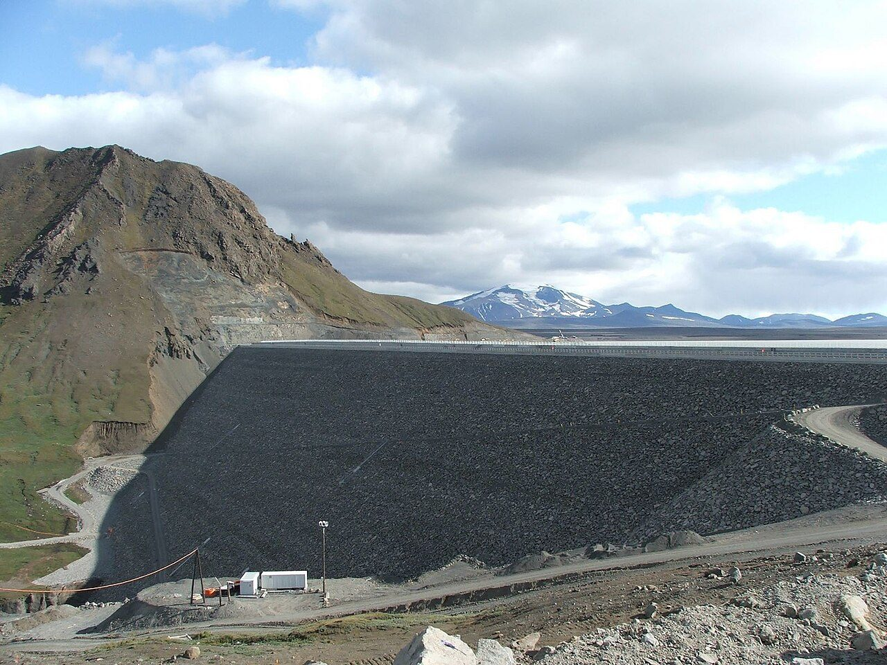
Sacad la libreta de la práctica 2, donde tenéis la masa de vuestra pieza y sus megajulios. Hoy le ponéis la otra columna.
Primera parte · la conversión (10 min)
- Con la escena, calculad los kg de CO₂e de esa pieza con los tres enchufes: Islandia, red española de 2024 y carbón. Tres números, cada uno con su multiplicación escrita.
- Al lado de cada uno, los megajulios, que no cambian. Escribid en una línea por qué una columna se mueve y la otra no.
- Repetid la cuenta suponiendo la pieza de otro material, el que teníais de segunda opción en la matriz de la sesión 3. ¿La elección que hicisteis entonces sigue siendo la buena mirando CO₂ en vez de megajulios? Contestad con los dos números delante, no de memoria.
Segunda parte · el reparto (10 min)
- Elegid el material de vuestra pieza en la escena y copiad el desglose: cuánto de su CO₂ sale del enchufe y cuánto no. Una frase: si el país limpiara su electricidad del todo, ¿cuánto bajaría vuestra pieza?
- Y una pregunta de honestidad, que vale un punto: en vuestra ficha hay una cosa cuyo CO₂ no sabéis. Decid cuál es y escribid, en vez de un número, qué haría falta para saberlo.
Cómo se evalúa
- Los tres factores aplicados, con la multiplicación escrita (3 puntos).
- La explicación de por qué los MJ no se mueven (2 puntos).
- La comparación con el segundo material, y si cambia la decisión (2 puntos).
- El desglose copiado y bien leído (2 puntos).
- El dato que no sabéis, dicho y no rellenado (1 punto).
- ¿Por qué no se puede pasar de megajulios a kilos de CO₂ multiplicando por un número fijo?
Ver respuesta
Por dos motivos, y los dos hay que saber decirlos. Uno: un megajulio no tiene un CO₂; depende de con qué se produjo esa energía, y el mismo kilo de aluminio va de 4,3 a 18,1 kg según el enchufe. Dos: hay CO₂ que no viene de ninguna energía, como el de la caliza del cemento. Ese no aparecería por ningún factor, por bueno que fuera.
- Dos materiales tienen 84 y 25 MJ/kg, y en CO₂ empatan a 2 kg/kg. ¿Cómo se explica?
Ver respuesta
Son el PET y el acero. La mayor parte de los 84 MJ del PET es petróleo que se convierte en plástico, no que se quema: es energía de la materia prima, y sigue metida en la botella. El acero, en cambio, quema coque de verdad. Ahora bien: si la botella se incinera al final, ese carbono sale —2,29 kg por kilo, calculado con la fórmula del PET— y el empate se acaba.
- ¿Por qué el cemento no se arregla poniendo energía limpia en la fábrica?
Ver respuesta
Porque alrededor de la mitad de su CO₂ no sale de quemar nada: sale de la reacción CaCO₃ → CaO + CO₂. Son 0,51 kg de CO₂ por kilo de clínker que están en la piedra y que salen sí o sí. Con el horno alimentado por el sol, esa mitad seguiría ahí. Por eso lo que se investiga es cambiar la receta o capturar el CO₂ a la salida.
- Un catálogo dice que su pieza de madera tiene «huella negativa». ¿Qué dos preguntas haces?
Ver respuesta
Una: ¿el bosque se repone? Si el árbol no se sustituye, no hay nada que vuelva a capturar el carbono y el número no vale. Dos: ¿qué pasa al final de la vida de la pieza? Si se quema o se pudre, devuelve exactamente los mismos 1,65 kg por kilo que se llevó. El carbono de la madera es un préstamo, y una huella negativa que no dice el plazo del préstamo no se puede comprobar.
Uno se recicla entero y dura dos años; otro no se recicla y dura diez
Gana el segundo, por cuatro veces. Reciclar es el tercer escalón de la jerarquía y no el primero, y eso está escrito en un artículo con número.
Pregunta de calle: «¿qué hay que hacer para que un aparato haga menos daño?». Nueve de cada diez contestan lo mismo, y lo contestan rápido: reciclarlo.
B: cuesta 100 MJ fabricarlo, dura 10 años y al final se tira a la basura, sin reciclar nada.
Necesitas ese aparato funcionando diez años. ¿Cuál gasta menos?
Haz la cuenta antes de leerla. Son dos multiplicaciones y una suma, y la respuesta te va a molestar.
100 + 75 + 75 + 75 + 75 = 400 MJ
B, el que no se recicla nada: hace falta uno.
= 100 MJ
Cuatro veces menos el que no recicla. Y ojo, porque la trampa no está en los números: reciclar el A ahorra de verdad. Sin reciclar serían cinco aparatos a 100, o sea 500 MJ, y con reciclado son 400: se ha ahorrado justo un 20 %. Lo que pasa es que llega tarde. Reciclar actúa después de haber fabricado, y durar actúa antes.
Esto no es una opinión de nadie: está escrito en la ley europea desde hace años, y con el orden puesto.
La jerarquía de residuos
Los cinco escalones, en este orden
La Directiva 2008/98/CE, en su artículo 4, obliga a los estados a aplicar esta prioridad, y en este orden:
- Prevención — que el residuo no llegue a existir.
- Preparación para la reutilización — que el objeto vuelva a servir para lo que servía.
- Reciclado — que el material vuelva a ser material.
- Otra valorización — por ejemplo, quemarlo para sacarle el calor.
- Eliminación — vertedero.
Reciclar es el tercero. Hay dos escalones por encima, y son justamente los que no salen en los anuncios.
¿Y por qué ese orden y no otro? Por una razón que ya sabes calcular: cada escalón conserva menos que el anterior.
Qué conserva cada bucle
- Mantener y reparar (el bucle más corto): conserva la función. El aparato no se mueve de donde está.
- Reutilizar: conserva el objeto. Cambia de dueño o de sitio.
- Reacondicionar o remanufacturar: conserva las piezas. Se abre, se cambia lo gastado y se vuelve a montar.
- Reciclar (el bucle más largo): conserva solo el material. Todo lo demás se tira.
Y ahí está la clave: la forma también cuesta energía. Un kilo de chapa no es una tapa: hay que cortarla, taladrarla, doblarla y montarla. Reciclar recupera el kilo de chapa y tira todo ese trabajo. Reparar lo conserva entero.
Circular, y sin eslóganes
Economía lineal y economía circular
Lineal: extraer → fabricar → usar → tirar. Una flecha recta, con una mina en un extremo y un vertedero en el otro.
Circular: la misma cadena, pero con bucles que devuelven cosas hacia atrás. Y no todos los bucles valen lo mismo: cuanto más corto, mejor, porque conserva más trabajo y se cruza menos transporte y menos proceso.
- «100 % reciclable.» Ya sabes de la sesión 5 que eso es una propiedad del material, no un resultado. Pregunta siempre: ¿y cuánto se recicla de verdad?
- «Neutro en carbono.» Casi siempre significa que se han comprado compensaciones, no que se haya bajado la emisión. Pregunta: ¿cuánto habéis reducido y cuánto habéis compensado?
- «Bioplástico.» Puede querer decir dos cosas distintas: hecho de plantas, o que se degrada. No son lo mismo, y hay bioplásticos que no se degradan y plásticos de petróleo que sí. Y casi ninguno se degrada en el campo: piden una planta industrial a 58 °C.
Lo que hay que ver en la escena
- Con el riego tal y como abre: tirarlo cuesta 805 MJ, reciclarlo 720 y repararlo 586. Reciclar ahorra 85 MJ; reparar ahorra 219. El bucle corto ahorra dos veces y media lo que el largo.
- Sube «una reparación cuesta» hasta que reparar deje de ganar, y apunta en qué valor pasa. Eso te dice cuánto puede costar una pieza de repuesto para que siga saliendo a cuenta. Es un dato de diseño.
- Pon el efecto rebote al 50 % con la lámpara y mira lo que pasa: reparar pierde. Si el aparato dura el doble pero lo tienes encendido mucho más, el ahorro se lo come el uso. Eso hay que decirlo en la memoria, no esconderlo.
- Baja los años que aguanta a 1 y mira la línea de tiempo del primero: veinte fabricaciones en veinte años. Esa fila de barras rojas es el dibujo de la economía lineal.
Y cuidado con la lectura fácil: el rebote no es una excusa para no mejorar. Lo que dice es que la cuenta hay que hacerla después, con lo que ha pasado de verdad, y no solo antes con lo que se esperaba. Esa es la diferencia entre una previsión y una medida.
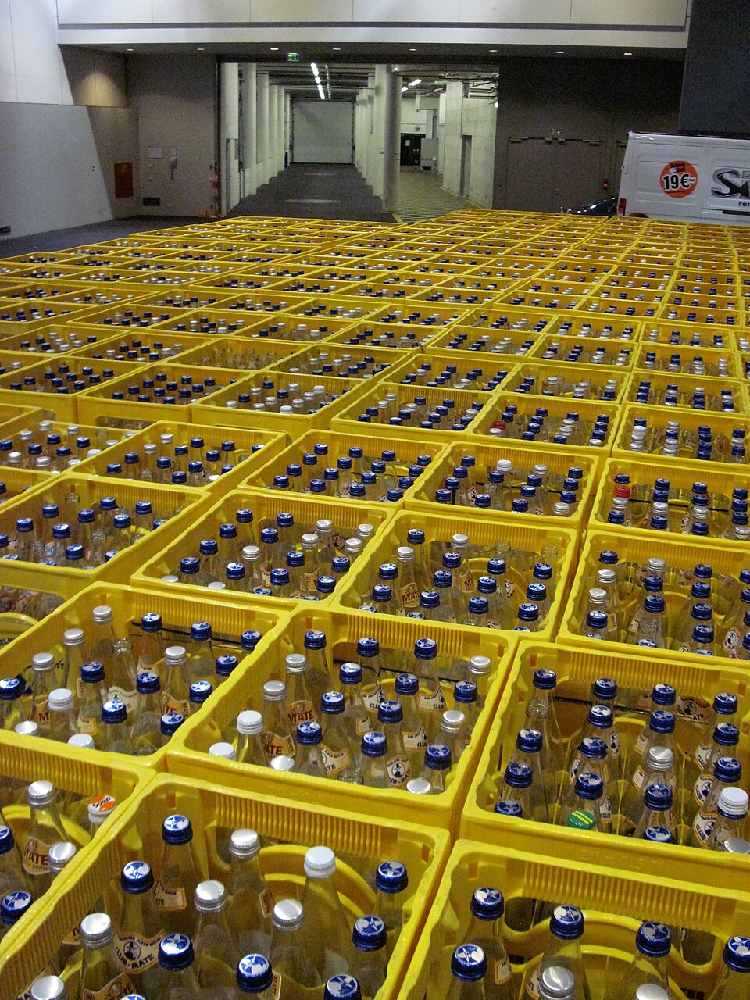
La versión oficial, en tres minutos y en español. Mientras lo ves, haz lo que llevas dos sesiones aprendiendo: cuenta cuántas veces dice «reciclar» y cuántas dice «reparar» o «prevenir», y compáralo con el orden del artículo 4 que acabas de copiar. Un vídeo institucional también es alguien contando algo con un interés. El vídeo no se carga hasta que lo pulsas, y se reproduce sin cookies de seguimiento. Si no se ve aquí —porque la red del centro bloquee YouTube o porque ese vídeo no se deje empotrar—, ábrelo directamente aquí. El vídeo es de su autor y no forma parte del material publicado bajo la licencia de esta página.
Vuestro aparato tiene cuatro o cinco piezas. Cada una va a fallar de una manera distinta y cada una tiene su propio escalón.
Primera parte · la tabla de bucles (10 min)
- Haced una tabla con una fila por pieza y estas columnas: cómo va a fallar, en qué escalón cae (de los cinco del artículo 4) y qué decisión de diseño la sube un escalón.
- Al menos una pieza tiene que acabar en prevención: alguna que se pueda quitar. La pieza que no existe es la que menos gasta, y el sitio donde se decide que no exista es el plano, no el contenedor.
- Marcad la pieza que va a fallar antes. Pista de las sesiones 4 y 5: la que lleva batería, la que se moja, la que roza o la que está pegada a otra de otro material.
Segunda parte · la cuenta a veinte años (10 min)
- Con la escena, poned vuestra variante y vuestros años. Copiad los cuatro totales y decid cuál gana.
- Encontrad el punto de equilibrio: subid el coste de la reparación hasta que reparar deje de ganar, y apuntad ese valor en MJ. Esa es vuestra especificación de repuesto: por encima de ahí, no merece la pena.
- Poned el efecto rebote en el valor que os parezca honesto para vuestro aparato —¿lo usaríais más si durase más?— y decid si vuestra conclusión aguanta. Justificad el valor que habéis puesto.
Cómo se evalúa
- La tabla completa, con el escalón de cada pieza bien puesto (3 puntos).
- Una pieza que se elimina, con su justificación (1 punto).
- Los cuatro totales de la escena, copiados con su reparto (2 puntos).
- El punto de equilibrio de la reparación, bien buscado (2 puntos).
- El rebote, con el valor justificado y la conclusión revisada (2 puntos).
- Reciclar es el tercer escalón de la jerarquía. ¿Cuáles son los dos de arriba y por qué están por encima?
Ver respuesta
Prevenir y preparar para la reutilización. Están por encima porque conservan más: la prevención evita la fabricación entera, y la reutilización conserva el objeto con toda su forma. Reciclar recupera el material y tira el trabajo de cortarlo, doblarlo y montarlo. El orden está en el artículo 4 de la Directiva 2008/98/CE, y es obligatorio.
- ¿Por qué gana un aparato que dura diez años y no se recicla frente a uno que dura dos y se recicla entero?
Ver respuesta
Porque el que dura dos hay que fabricarlo cinco veces para dar el mismo servicio, y reciclarlo solo devuelve una parte de cada fabricación. 100 + 4 × 75 = 400 MJ frente a 100. Reciclar ahorra de verdad, pero llega tarde: actúa después de que el gasto ya se haya hecho, y la duración actúa antes de que se haga.
- ¿Qué es el efecto rebote y por qué hay que escribirlo en la memoria aunque estropee el resultado?
Ver respuesta
Es que una mejora ahorra por unidad, el ahorro abarata el uso, y entonces se usa más: el LED gasta ocho veces menos y hemos puesto luz donde no había. Hay que escribirlo porque una memoria que solo cuenta lo que mejora no se puede comprobar: el que la lea no sabrá si la cuenta está completa. Y porque obliga a medir después, no solo a prever antes.
- Una marca dice que su envase es «100 % reciclable y neutro en carbono». ¿Qué preguntas?
Ver respuesta
De lo primero: ¿cuánto se recicla de verdad? Reciclable es una propiedad del material y reciclado es un resultado del sistema —la cadena de la sesión 5—. De lo segundo: ¿cuánto habéis reducido y cuánto habéis compensado?, y ¿dónde pusisteis los límites? «Neutro» casi siempre quiere decir que se ha comprado una compensación, no que se haya bajado la emisión.
«Hemos elegido madera porque es más ecológica» no es una frase: es un hueco
El documento que se entrega. Nueve apartados, una etiqueta de procedencia por número y, al final, lo único que distingue una memoria de un folleto: decir de qué depende lo que afirmas.
Última sesión de la unidad, y toca entregar. La memoria de impacto es el documento que acompaña al proyecto y que dice qué le cuesta al planeta lo que habéis construido. Empezamos leyendo cinco frases sacadas de memorias reales.
- «Hemos elegido madera porque es más ecológica.»
- «Nuestro depósito es 100 % reciclable.»
- «El proyecto es neutro en carbono.»
- «La tapa es de contrachapado de 4 mm y pesa 72 g; a 15 MJ/kg son 1,1 MJ.»
- «Con la red española de 2024, esos 72 g son 0,04 kg de CO₂e.»
Subraya las que un compañero de otro grupo podría comprobar con una balanza, la tabla de la sesión 2 y diez minutos. No las que te parezcan verdad: las que se puedan comprobar.
Las tres primeras no se pueden comprobar, y cada una falla por un motivo que ya tienes estudiado:
2 · reciclable no es reciclado: es una propiedad del material, no un resultado (sesión 5).
3 · ¿dónde están los límites? ¿cuánto se ha reducido y cuánto se ha comprado? (sesiones 1 y 7).
Las dos últimas sí. Y fíjate en lo que tienen y las otras no: un número, una unidad y la procedencia del dato. Con eso, cualquiera puede repetir la cuenta y llevarte la contraria.
Esa es la regla de la sesión, y vale para el resto de vuestra vida: una afirmación que no se puede comprobar no vale nada, ni siquiera cuando es verdad.
Qué lleva dentro una memoria de impacto
No es un texto libre: es una lista, y cada apartado sale de una sesión que ya habéis dado.
Los nueve apartados
- Unidad funcional y límites. Qué tarea, con qué cantidad y durante cuánto; dónde empieza y dónde acaba la cuenta, y qué habéis dejado fuera a propósito. (Sesión 1)
- Inventario de materiales. Pieza, material, masa, y cómo medisteis la masa. (Sesión 2)
- Energía incorporada. kg × MJ/kg, con la fuente de cada MJ/kg. (Sesión 2)
- La decisión de material. La matriz entera, con los pesos y el porqué de cada peso. (Sesión 3)
- Reparabilidad. Qué uniones lleva, qué se puede abrir y con qué herramienta. (Sesión 4)
- Final de vida. A qué fracción va cada material y si es ciclo cerrado o abierto. (Sesión 5)
- CO₂. La conversión, con el factor usado y de dónde sale. (Sesión 6)
- Qué haríais distinto. Una propuesta, con su número. (Sesión 7)
- De qué depende esto. Lo que no sabéis y cuánto puede mover el resultado. (Hoy.)
Cada número, con su etiqueta
Medido, de fuente o estimado
- Medido: lo hemos pesado, cronometrado o contado nosotros. Se dice con qué.
- De fuente: sale de una tabla o de un estudio. Se dice cuál y de qué año.
- Estimado: nos lo hemos inventado con criterio. Se dice cómo lo hemos estimado.
Y la regla que lo sostiene todo: un número sin etiqueta se lee como medido. Por eso una memoria que no etiqueta acaba mintiendo sin querer, aunque todos sus datos sean razonables.
La pregunta que cierra la unidad: ¿de qué depende?
Aquí llega lo que de verdad separa una memoria de un folleto. Tú tienes datos de tres clases, y algunos son bastante malos. La tentación es callarse. Lo correcto es justo lo contrario: enseñar cuánto puede mover cada dato malo el resultado.
Análisis de sensibilidad
- Elige el número final del que quieres responder. Por ejemplo, los MJ por año de servicio.
- Coge un dato del que no estés seguro y llévalo a sus dos extremos razonables, dejando todo lo demás quieto.
- Apunta de cuánto a cuánto se va el resultado. Ese recorrido es lo que mueve ese dato.
- Repite con cada dato dudoso y ordénalos por lo que mueven.
Para qué sirve: si la conclusión aguanta en los dos extremos de todos, la puedes defender. Si no aguanta, ya sabes exactamente qué trabajo falta: medir ese dato, y no discutir los otros.
Lo que hay que ver en la escena
- Con el riego tal y como abre, el orden es este: manda la mochila de la electrónica (36 MJ/año de recorrido), luego lo que gasta al año (28,5) y luego cuánto dura (25,0). El material de la pieza mayor mueve 2,1, y la masa, 0,3.
- Léelo despacio, porque es el resultado más incómodo de toda la unidad: el dato que no tenéis mueve diecisiete veces más que el material de la pieza mayor (36,0 frente a 2,1), y hasta la masa de las piezas, que tampoco habéis medido bien, queda por debajo. Lo que lleváis dos sesiones discutiendo es la barra cuarta.
- Eso no quiere decir que la sesión 3 fuera una pérdida de tiempo. Quiere decir que la matriz decidía bien una cosa pequeña. Cambia la pieza mayor a aluminio y mira cómo crece esa barra: el material sí manda cuando la pieza es grande o el material es caro en energía.
- Prueba la lámpara: el orden cambia y se pone primero lo que gasta al año, con 82,5, porque una lámpara está encendida muchas horas y el uso se come todo lo demás. La sensibilidad no es una propiedad del método: es una propiedad de tu aparato, y por eso hay que correrla con vuestros números y no copiar la de otro grupo.
- Y mueve el CO₂ de la electricidad: la línea de CO₂ cambia y las barras del tornado no. Es la sesión 6 otra vez: son dos magnitudes distintas.
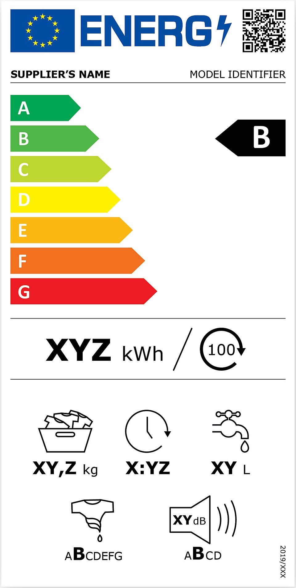
Esto es lo que se entrega. Una página, y que se pueda comprobar entera.
Primera parte · la ficha (8 min)
- Poned en la escena vuestra variante y corregid las tres piezas con vuestros materiales y vuestras masas de verdad. Si no las habéis pesado todavía, pesadlas ahora: es un minuto y cambia todo lo demás.
- Copiad la ficha con los nueve apartados de arriba. Los seis primeros ya los tenéis escritos en las prácticas anteriores: aquí se juntan, no se rehacen.
- Poned a cada número su etiqueta: medido, de fuente o estimado. Los de fuente, con su fuente. Los estimados, con cómo los habéis estimado.
Segunda parte · de qué depende (7 min)
- Copiad las cinco barras del análisis de sensibilidad, en orden y con su recorrido.
- Escribid las tres frases de la memoria, del estilo de la que la escena deja escrita abajo: una con la cifra principal, una con lo que más la puede mover y una con lo que no sabéis. Las tres tienen que llevar número, unidad y procedencia.
- Y la última línea, que es la que más cuesta escribir: «si tuviéramos una semana más, lo que mediríamos es…», y tiene que ser la barra más larga del tornado. Si no lo es, es que no habéis leído vuestro propio análisis.
Cómo se evalúa
- Las masas pesadas de verdad y la ficha con sus piezas (2 puntos).
- Los nueve apartados, aunque alguno sea de una línea (2 puntos).
- Las etiquetas de procedencia, una por número (2 puntos).
- Las cinco barras de sensibilidad, en orden (2 puntos).
- Las tres frases y la línea final, coherente con el tornado (2 puntos).
Toda la unidad, de la primera sesión a la octava
1. Un estudio dice que una bolsa de tela hay que usarla 7.100 veces para empatar con una de plástico. Lo primero que hay que preguntar es…
2. Fundir un kilo de aluminio cuesta 0,97 MJ y producirlo cuesta 186. ¿Dónde está la diferencia?
3. Para que se hunda lo mismo que 4 mm de contrachapado, la tapa de acero necesita 1,35 mm. Comparadas así…
4. ¿Cuál es la diferencia entre un requisito eliminatorio y un criterio con peso 5?
5. Una lata pone «reciclable al 100 % e infinitas veces». Eso…
6. Una cadena de reciclado tiene cuatro etapas al 80 %. ¿Qué rendimiento tiene la cadena?
7. Una botella de PET que acaba convertida en forro polar es un ejemplo de…
8. La misma tapa de aluminio, con los mismos 186 MJ/kg, hecha en Islandia o con carbón. Su CO₂…
9. El hormigón tiene solo 1,1 MJ/kg y aun así el cemento es un emisor enorme. ¿Por qué?
10. Un aparato A cuesta 100 MJ, dura 2 años y se recicla (el siguiente cuesta un 25 % menos). Un aparato B cuesta 100 MJ, dura 10 y no se recicla. Para diez años de servicio…
11. ¿Qué es el efecto rebote?
12. Hacéis el análisis de sensibilidad del riego y sale que la mochila de la electrónica mueve 36 MJ/año y el material de la tapa, 2,1. ¿Qué se escribe en la memoria?
Se corrige en tu propio navegador: no se envía ni se guarda nada. Las explicaciones aparecen al corregir, tanto en las que aciertes como en las que falles.
- «Hemos elegido madera porque es más ecológica.» Reescríbela para que se pueda comprobar.
Ver respuesta
Algo así: «La tapa es de contrachapado de 4 mm, 72 g, medidos con balanza. A 15 MJ/kg (Ashby, producción primaria) son 1,1 MJ, frente a los 29,4 MJ de la misma tapa en aluminio de 1,95 mm, dimensionada para la misma rigidez.» Lo que le falta a la frase original no es adornarla: es el número, la unidad, la procedencia y contra qué se compara, con las dos piezas haciendo el mismo trabajo.
- ¿Por qué hay que etiquetar cada número como medido, de fuente o estimado?
Ver respuesta
Porque un número sin etiqueta se lee como medido, y entonces una memoria razonable acaba diciendo cosas que no ha comprobado. La etiqueta no rebaja el dato: lo hace usable. Sin ella, el que lo lea no puede repetir la cuenta ni saber dónde está el punto flojo.
- ¿Para qué sirve de verdad un análisis de sensibilidad?
Ver respuesta
Para dos cosas. Si la conclusión aguanta en los dos extremos de todos los datos dudosos, se puede defender aunque los datos sean malos. Y si no aguanta, te dice exactamente qué trabajo falta: medir ese dato, no volver a discutir los demás. Es la diferencia entre «no estamos seguros» y «no estamos seguros de esto, y cambia el resultado tanto».
- En vuestra ficha, el CO₂ de la electrónica va sin número. ¿Eso no es dejar el trabajo a medias?
Ver respuesta
No: es la parte mejor hecha. No hay dato publicado de la huella de una placa como la vuestra, y de los megajulios no se saca con un factor, porque en la sesión 6 viste que un megajulio no tiene un CO₂. Poner ahí una cifra inventada quedaría mejor y sería peor, porque nadie podría distinguirla de las que sí están calculadas. Un hueco declarado es información.
Queda una cosa abierta, y es grande. Todo lo de esta unidad trata de qué está hecho vuestro aparato y qué cuesta. Pero vuestro aparato tiene que hacer algo: mover un tope, abrir una válvula, encender una bomba cuando la tierra esté seca. Eso es el tema 4, mecanismos y sistemas de control, y ahí el proyecto deja de ser un objeto y empieza a ser una máquina.
Lectura de aula
Treinta párrafos numerados y diez preguntas. Ocupa una sesión entera: se lee en voz alta por turnos, un párrafo cada uno, y luego se contesta por escrito. Trae su cabecera para el nombre, el grupo y la fecha.
Descargar el PDFLicencia y uso
Tema 3 · Materiales y ciclo de vida · © 2026 Roberto P. García Llorente, Profesor de Tecnología en Educación Secundaria.
Publicado bajo Creative Commons Reconocimiento-CompartirIgual 4.0 Internacional. Puedes copiarlo, adaptarlo y redistribuirlo, incluso con fines comerciales, siempre que cites la autoría, indiques si lo has modificado y publiques tus versiones derivadas con esta misma licencia.
Cómo citar
Roberto P. García Llorente (2026). Tema 3 · Materiales y ciclo de vida. https://rgllorente82-png.github.io/robertotecnologia/4eso/Tecnologia/tema3/. Bajo licencia CC BY-SA 4.0.
Qué cubre
Los textos, los dibujos y el código de esta página, que son obra propia.
No cubre las fotografías, que proceden de Wikimedia Commons y conservan su propia licencia, indicada bajo cada una. Algunas son de dominio público; las demás están bajo licencias Creative Commons compatibles con esta, y se reproducen citando autoría y licencia como exigen. Tampoco cubre las tipografías, de Google Fonts con su propia licencia.
Otros usos
Para usos que excedan la licencia, abre una incidencia en el repositorio del proyecto.